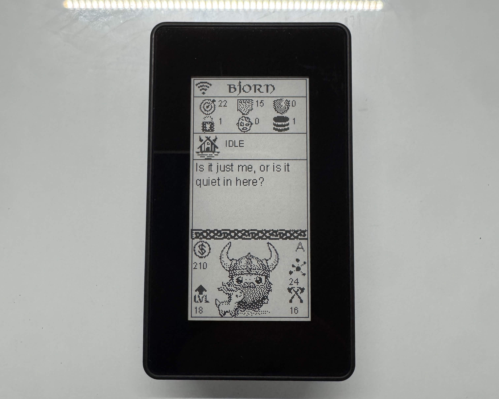
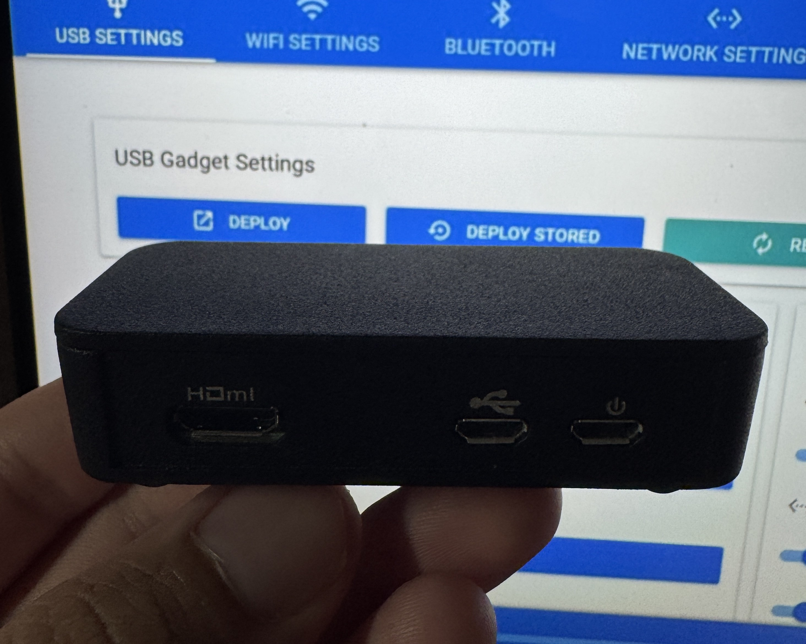

Projects
I'll try to keep this updated as often as I can, but like most devs my projects likes to move faster than my documentation sometimes...


Bjorn: Network Defender
Bjorn is a «Tamagotchi like» autonomous network scanning, vulnerability assessment, and offensive security tool designed to run on a Raspberry Pi equipped with a 2.13-inch e-Paper HAT. This project provides my personal experince with setup and build of Bjorn.
RPI Bad USB ALOA
P4wnP1 A.L.O.A. by MaMe82 is a framework which turns a Rapsberry Pi Zero W into a flexible, low-cost platform for pentesting, red teaming and physical engagements ... or into "A Little Offensive Appliance.